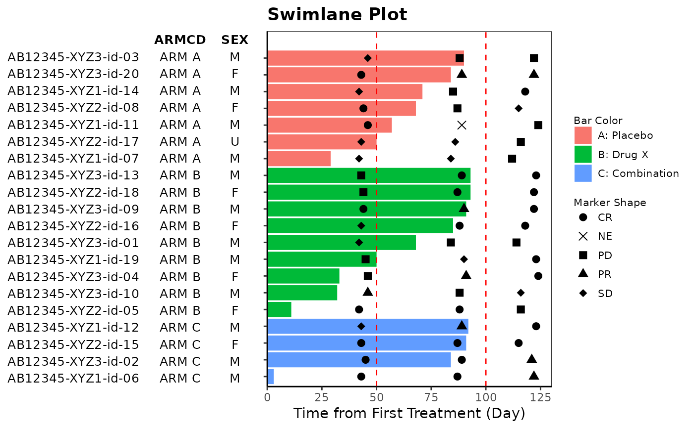

Swimlane plot is often used in Early Development (ED) and displays individual patient bar plot with markers of events and patient level annotation
g_swimlane( bar_id, bar_length, sort_by = NULL, col_by = NULL, marker_id = NULL, marker_pos = NULL, marker_shape = NULL, marker_shape_opt = NULL, marker_color = NULL, marker_color_opt = NULL, anno_txt = NULL, yref_line = NULL, ytick_at = waiver(), ylab, title )
| bar_id | vector of IDs to identify each bar |
|---|---|
| bar_length | numeric vector to be plotted as length for each bar |
| sort_by | vector to sort bars |
| col_by | vector to color bars |
| marker_id | vector of IDs to identify markers within each bar. Default is the same as bar_id. |
| marker_pos | numeric vector to specify position for each marker point |
| marker_shape | vector to specify shape for markers |
| marker_shape_opt | aesthetic values to map shape values (named vector to map shape values to each name) |
| marker_color | vector to specify color for markers |
| marker_color_opt | aesthetic values to map shape values (named vector to map shape values to each name) |
| anno_txt | dataframe of subject-level variables to be displayed as annotation on the left |
| yref_line | numeric vector to plot reference lines |
| ytick_at | optional break interval of bar length axis |
| ylab | label for bar length |
| title | string to be displayed as plot title |
plot object
Ting Qi (qit3) qit3@gene.com
# Example 1 library(dplyr) ASL <- rADSL[1:20, ] ARS <- ASL %>% select(USUBJID) %>% left_join(rADRS, "USUBJID") %>% dplyr::filter(PARAMCD == "OVRINV") ANL <- ASL %>% left_join(ARS, by = c("STUDYID", "USUBJID")) anno_txt <- ASL[, c("ARMCD", "SEX")] g_swimlane( bar_id = ASL$USUBJID, bar_length = ASL$TRTDURD, sort_by = ASL$ARM, col_by = ASL$ARM, marker_id = ANL$USUBJID, marker_pos = ANL$ADY, marker_shape = ANL$AVALC, marker_shape_opt = c("CR" = 16, "PR" = 17, "SD" = 18, "PD" = 15, "NE" = 4), marker_color = NULL, marker_color_opt = NULL, anno_txt = anno_txt, yref_line = c(50, 100), ytick_at = waiver(), ylab = "Time from First Treatment (Day)", title = "Swimlane Plot" )# Example 2 library(dplyr) ASL <- rADSL[1:20, ] ARS <- rADRS anno_txt_vars <- c("ARMCD", "SEX", "COUNTRY") anno_txt <- ASL[, anno_txt_vars] # markers from ARS ARS <- ASL %>% select(USUBJID) %>% left_join(ARS, "USUBJID") %>% dplyr::filter(PARAMCD == "OVRINV") %>% select(USUBJID, ADY, AVALC) # markers from ASL - discontinuation ADS <- ASL %>% dplyr::filter(EOSSTT == "Discontinued" | DCSREAS != "") %>% select(USUBJID, EOSDY, DCSREAS) %>% dplyr::rename(ADY = EOSDY, AVALC = DCSREAS) # combine ARS with ADS records as one data for markers and join with ASL ANL <- ASL %>% inner_join(rbind(ARS, ADS), "USUBJID") g_swimlane( bar_id = sub(".*-", "", ASL$USUBJID), bar_length = ASL$TRTDURD, sort_by = NULL, col_by = ASL$ARMCD, marker_id = sub(".*-", "", ANL$USUBJID), marker_pos = ANL$ADY, marker_shape = ANL$AVALC, marker_shape_opt <- c( "CR" = 16, "PR" = 17, "SD" = 18, "PD" = 15, "NE" = 0, "Adverse Event" = 7, "Death" = 8, "Physician Decision" = 9, "Progressive Disease" = 10, "Symptomatic Deterioation" = 11, "Withdrawal by Subject" = 12 ), marker_color = ANL$AVALC, marker_color_opt <- c( "CR" = "green", "PR" = "blue", "SD" = "yellow", "PD" = "red", "NE" = "grey", "Adverse Event" = "orange", "Death" = "black", "Physician Decision" = "navy", "Progressive Disease" = "purple", "Symptomatic Deterioation" = "cyan", "Withdrawal by Subject" = "darkred" ), anno_txt = anno_txt, yref_line = c(50, 100), ytick_at = waiver(), ylab = "Time from First Treatment (Day)", title = "Swimlane Plot" )